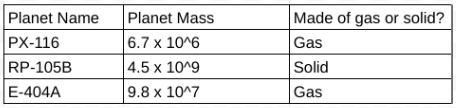
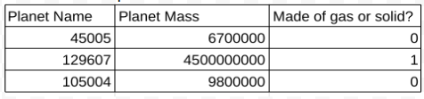
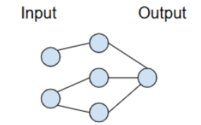
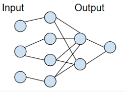
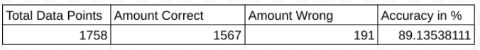
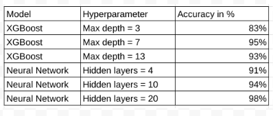
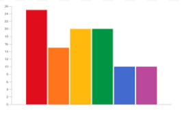

Step |
Description |
Images |
|---|---|---|
1 |
Gather data from NASA Exoplanet Archives |
 |
2 |
Numerize data and modify columns for computers to understand |
 |
3 |
Create model using Python SKLearn/TensorFlow Libraries |
 |
4 |
Train model, allowing it to modify itself to fit data |
 |
5 |
Test model on new data and compare predictions with actual data to calculate accuracy of predictions |
 |
6 |
Repeat steps 3-5 with different types of models and tweak hyperparameters to find best models |
 |
7 |
Visualize results and determine which models are significantly accurate and which are most accurate |
 |